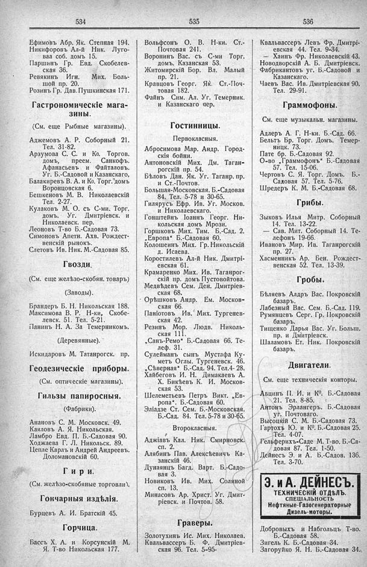

Лист источника 308
Скан

Распознанный текст
534
Ефимовъ Абр. Як. Степная 194.
Никифоровъ Ал-й Ник. Луго-
вая соб. домъ 15.
Паршинъ Гр. Евд. Скобелев-
ская 36.
Ревякинъ Игн. Мих. Боль-
шой пр. 20.
Розинъ Гр. Дав. Пушкинская 171.
Гастрономическіе мага-
зины.
(См. еще Рыбные магазины).
Аджемовъ А. Р. Соборный 21.
Тел. 31-82.
Арзумова С. С. и Ко. Торгов.
домъ, преем. Санкофъ.
Афанасьевъ и Файталовъ.
Уг. Б.-Садовой и Казанскаго,
Балакиревъ В. А. и Ко. Торг. домъ
Воронцовская 6.
Бешкеновъ М. В. Николаевскій
Тел. 2-27.
Кулаковъ М. О. съ С-ми. Торг.
домъ. Уг. Дмитріевск. и
Николаевск. пер.
Леоновъ Т-во Б.-Садовая 73.
Симоновъ Апетн. Ахв. Рождест-
венскій рынокъ.
Слетовъ Ив. Ник. М.-Садовая 85.
Гвозди.
(См. еще желѣзо-скобян. товаръ)
(Заводы).
Брандеръ Б. Н. Никольская 188.
Максимова В. Р. Н-ки, Скобе-
левск. 51. Тел. 5-21.
Панинъ Н. А. За Темерникомъ.
(Деревянные).
Искидаровъ М. Таганрогск. пр.
Геодезическіе приборы.
(См. оптическіе магазины).
Гильзы папиросныя.
(Фабрики).
Анановъ С. М. Московск. 49.
Каяловъ А. Я. Никольская.
Ламбро Евд. П. Б.-Садовая 90.
Ходжаева Г. Л. Никольск. 89.
Цепле Карлъ и Андрей Андреевъ.
Доломановскій 60.
Гири.
(См. желѣзо-скобяные торговли).
Гончарныя издѣлія.
Бурцевъ А. И. Братскій 45.
Горчица.
Бассъ Х. А. и Корсунскій М.
Я. Т-во Никольская 177.
535
Вольфсонъ О. В. Н-ки. Ст.-
Почтовая 241.
Воронинъ Вас. съ С-ми Торг.
домъ. Казанская 53.
Житомирскій Бор. Вл. Малый
пр. 21.
Кравцовъ Георг. Як. Ст.-Поч-
товая 182.
Файнъ Сим. Ал. Уг. Темерник.
и Казанскаго пер.
Гостинницы.
Первокласныя.
Абросимова Мар. Андр. Город-
скія бойни.
Антоновскій Мих. Дм. Таган-
рогскій пр. 54.
Бѣловъ Дан. Як. Уг. Таганр. пр.
и Ст.-Почтов.
Большая-Московская. Б.-Садовая
84. Тел. 5-78 и 30-65.
Гилярусъ Ефр. Ив. Уг. Москов.
и Николаевскаго.
Гонштейнъ Іоаннъ Георг. Ни-
кольская домъ Мрози.
Горшковъ Мих. Тим. Б.-Сад. 2.
„Европа“ Б.-Садовая 60.
Колошеинъ Мих. Гр. Никольскій
д. Исаева.
Коростилевъ Ал-й Ник. Дмитрі-
евская 61.
Крамаренко Мих. Ив. Таганрог-
скій пр. домъ Пустовойтова.
Медвѣдевъ Сем. Ден. Дмитріев-
ская 68.
Орѣшковъ Андр. Ем. Москов-
ская 66.
Паніотовъ Ив. Мих. Тургенев-
ская 42.
Резинъ Мор. Людв. Николь-
ская 111.
„Санъ-Ремо“ Б.-Садовая 66. Те-
леф. 31.
Сулейманъ сынъ Мустафа Ку-
метъ Оглы. Тургеневск. 46.
„Сѣверная“ Б.-Сад. 94. Тел. 4-28.
Хайбеговъ И. Н. Димакаевъ А.
Х. Бикѣевъ К. И. Москов-
ская 53.
Шелеметьевъ Петръ Викт. „Ев-
ропа“. Б.-Садовая 60.
Эліадзе Ст. Сем. Б.-Московская.
Б.-Сад. 84. Тел. 5-78 и 30-65.
Второкласныя.
Аджіавъ Кал. Ник. Смирновск.
сп. 2.
Алябинъ Пав. Алексѣевичъ Ка-
занскій 46.
Дунаянцъ Багд. Варт. Б.-Садо-
вая 3.
Новиковъ Ив. Мих. Соляной
сп. 13.
Минасовъ Ар. Христ. Уг. Дмит-
ріевск. и Почтов. 58.
Граверы.
Золотухинъ Ис. Мих. Николаев.
Квальвассеръ Б. Ф. Дмитріев-
ская 96. Тел. 5-95-
536
Квальвассеръ Левъ Фр. Дмитрі-
евская 44. Тел. 9-34.
— Хаинъ Фр. Николаевскій 43.
Новодворскій А. Б. Дмитріевск.
Фабрикантовъ уг. Б.-Садовой и
Казанскаго.
Чаевъ Вас. Ив. Дмитріевская 90.
Тел. 29-91.
Граммофоны.
См. еще музыкальн. магазины.
Адлеръ А. Г. Н-ки. Б.-Сад. 66.
Бельтъ Бр. Торг. Домъ. Темер-
ницк. 73.
Пате бр. Б.-Садовая 92.
О-во „Граммофонъ“ Б.-Садовая
57. Тел. 15-06.
Чертовъ С. Я. Торг. Домъ. Б.-
Садовая 57. Тел. 5-76.
Шредеръ К. М. Б.-Садовая 68.
Грибы.
Зыковъ Илья Митр. Соборный
14. Тел. 13-22.
— Сав. Мит. Соборный 14. Те-
лефонъ 19-66.
Ивановъ Мир. Ив. Таганрогскій
пр. 27.
Хасменникъ Ар. Бен. Рождест-
венская 52. Тел. 13-39.
Гробы.
Бѣляевъ Алдръ Вас. Покровскій
базаръ.
Лабезный Вас. Сем. Б.-Сад. 119.
Румянцевъ Серг. Гр. Покровскій
базаръ.
Тищенко Дарья Вас. Уг. Больш.
пр. и Дмитріевск.
Шаламовъ Ет. Ник. Покровскій
базаръ.
Двигатели.
См. еще техническія конторы.
Авцинъ П. И. и Кº. Б.-Садовая
21. Тел. 8-85.
Антонъ Эрлангеръ. Б.-Садовая
уг. Почтоваго.
Высоцкій С. М. Б.-Садовая 73.
Гартохъ Ю. и Кº. Б.-Садовая 25.
Тел. 4-07.
Гельферихъ-Саде М. Т-во. Б.-Са-
довая 87. Тел. 1-50.
Дейнесъ Э. и А. Б.-Садов. 136.
Тел. 3-70.
Э. и А. ДЕЙНЕСЪ.
ТЕХНИЧЕСКІЙ ОТДѢЛЪ.
СПЕЦІАЛЬНОСТЬ
Нефтяные-Газогенераторные
Дизель-моторы.
Добровыхъ и Набгольцъ Т-во.
Б.-Садовая 58.
Зигель К. Б.-Садовая 34.
Загоруйко Я. Н. Б.-Садовая 34.